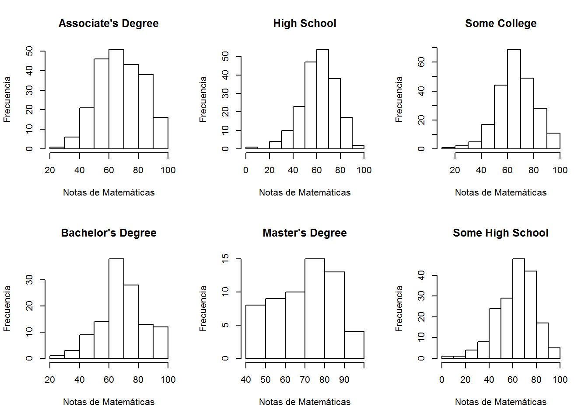
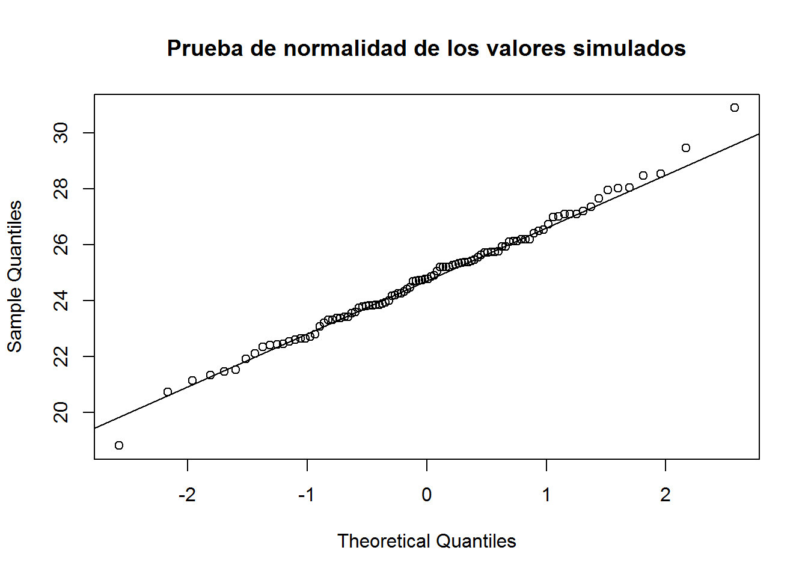
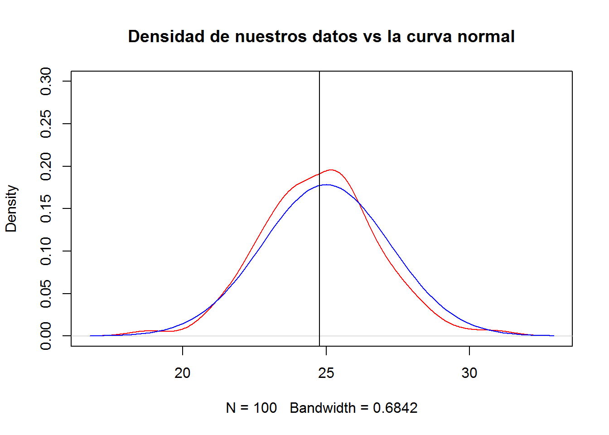
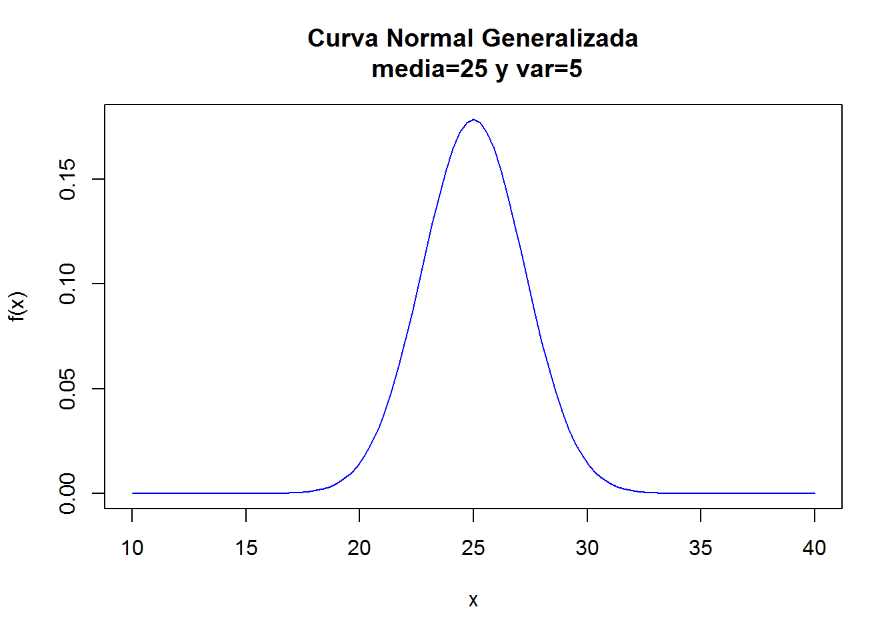

R
install.packages("ggplot2")
install.packages("corrplot")
install.packages("plyr")
install.packages("plotrix")datos<-read.csv("StudentsPerformance.csv")
#read.csv(file.choose(),)
#read.csv(file.choose())
colnames(datos)<-c("gender","race","education", "lunch", "testprep", "math","reading", "writing")
datos1 <- datos[datos$education=="associate's degree",]
datos2 <- datos[datos$education=="bachelor's degree",]
datos3 <- datos[datos$education=="high school",]
datos4 <- datos[datos$education=="master's degree",]
datos5 <- datos[datos$education=="some college",]
datos6 <- datos[datos$education=="some high school",]head(datos)## gender race education lunch testprep math reading
## 1 female group B bachelor's degree standard none 72 72
## 2 female group C some college standard completed 69 90
## 3 female group B master's degree standard none 90 95
## 4 male group A associate's degree free/reduced none 47 57
## 5 male group C some college standard none 76 78
## 6 female group B associate's degree standard none 71 83
## writing
## 1 74
## 2 88
## 3 93
## 4 44
## 5 75
## 6 78tail(datos)## gender race education lunch testprep math reading
## 995 male group A high school standard none 63 63
## 996 female group E master's degree standard completed 88 99
## 997 male group C high school free/reduced none 62 55
## 998 female group C high school free/reduced completed 59 71
## 999 female group D some college standard completed 68 78
## 1000 female group D some college free/reduced none 77 86
## writing
## 995 62
## 996 95
## 997 55
## 998 65
## 999 77
## 1000 86names(datos)## [1] "gender" "race" "education" "lunch" "testprep" "math"
## [7] "reading" "writing"str(datos)## 'data.frame': 1000 obs. of 8 variables:
## $ gender : Factor w/ 2 levels "female","male": 1 1 1 2 2 1 1 2 2 1 ...
## $ race : Factor w/ 5 levels "group A","group B",..: 2 3 2 1 3 2 2 2 4 2 ...
## $ education: Factor w/ 6 levels "associate's degree",..: 2 5 4 1 5 1 5 5 3 3 ...
## $ lunch : Factor w/ 2 levels "free/reduced",..: 2 2 2 1 2 2 2 1 1 1 ...
## $ testprep : Factor w/ 2 levels "completed","none": 2 1 2 2 2 2 1 2 1 2 ...
## $ math : int 72 69 90 47 76 71 88 40 64 38 ...
## $ reading : int 72 90 95 57 78 83 95 43 64 60 ...
## $ writing : int 74 88 93 44 75 78 92 39 67 50 ...summary(datos)## gender race education lunch
## female:518 group A: 89 associate's degree:222 free/reduced:355
## male :482 group B:190 bachelor's degree :118 standard :645
## group C:319 high school :196
## group D:262 master's degree : 59
## group E:140 some college :226
## some high school :179
## testprep math reading writing
## completed:358 Min. : 0.00 Min. : 17.00 Min. : 10.00
## none :642 1st Qu.: 57.00 1st Qu.: 59.00 1st Qu.: 57.75
## Median : 66.00 Median : 70.00 Median : 69.00
## Mean : 66.09 Mean : 69.17 Mean : 68.05
## 3rd Qu.: 77.00 3rd Qu.: 79.00 3rd Qu.: 79.00
## Max. :100.00 Max. :100.00 Max. :100.00levels(datos$education)## [1] "associate's degree" "bachelor's degree" "high school"
## [4] "master's degree" "some college" "some high school"summary(datos1) ## gender race education lunch
## female:116 group A:14 associate's degree:222 free/reduced: 77
## male :106 group B:41 bachelor's degree : 0 standard :145
## group C:78 high school : 0
## group D:50 master's degree : 0
## group E:39 some college : 0
## some high school : 0
## testprep math reading writing
## completed: 82 Min. : 26.00 Min. : 31.00 Min. : 35.0
## none :140 1st Qu.: 57.00 1st Qu.: 61.00 1st Qu.: 58.0
## Median : 67.00 Median : 72.50 Median : 70.5
## Mean : 67.88 Mean : 70.93 Mean : 69.9
## 3rd Qu.: 80.00 3rd Qu.: 81.00 3rd Qu.: 80.0
## Max. :100.00 Max. :100.00 Max. :100.0summary(datos2)## gender race education lunch
## female:63 group A:12 associate's degree: 0 free/reduced:44
## male :55 group B:20 bachelor's degree :118 standard :74
## group C:40 high school : 0
## group D:28 master's degree : 0
## group E:18 some college : 0
## some high school : 0
## testprep math reading writing
## completed:46 Min. : 29.00 Min. : 41.00 Min. : 38.00
## none :72 1st Qu.: 61.00 1st Qu.: 63.00 1st Qu.: 62.50
## Median : 68.00 Median : 73.00 Median : 74.00
## Mean : 69.39 Mean : 73.00 Mean : 73.38
## 3rd Qu.: 79.00 3rd Qu.: 82.75 3rd Qu.: 83.00
## Max. :100.00 Max. :100.00 Max. :100.00summary(datos3)## gender race education lunch
## female: 94 group A:18 associate's degree: 0 free/reduced: 70
## male :102 group B:48 bachelor's degree : 0 standard :126
## group C:64 high school :196
## group D:44 master's degree : 0
## group E:22 some college : 0
## some high school : 0
## testprep math reading writing
## completed: 56 Min. : 8.00 Min. :24.00 Min. : 15.00
## none :140 1st Qu.:53.75 1st Qu.:54.00 1st Qu.: 52.00
## Median :63.00 Median :66.00 Median : 64.00
## Mean :62.14 Mean :64.70 Mean : 62.45
## 3rd Qu.:72.00 3rd Qu.:74.25 3rd Qu.: 73.00
## Max. :99.00 Max. :99.00 Max. :100.00summary(datos4)## gender race education lunch
## female:36 group A: 3 associate's degree: 0 free/reduced:24
## male :23 group B: 6 bachelor's degree : 0 standard :35
## group C:19 high school : 0
## group D:23 master's degree :59
## group E: 8 some college : 0
## some high school : 0
## testprep math reading writing
## completed:20 Min. :40.00 Min. : 42.00 Min. : 46.00
## none :39 1st Qu.:55.50 1st Qu.: 65.50 1st Qu.: 67.00
## Median :73.00 Median : 76.00 Median : 75.00
## Mean :69.75 Mean : 75.37 Mean : 75.68
## 3rd Qu.:81.00 3rd Qu.: 84.50 3rd Qu.: 85.00
## Max. :95.00 Max. :100.00 Max. :100.00summary(datos5)## gender race education lunch
## female:118 group A:18 associate's degree: 0 free/reduced: 79
## male :108 group B:37 bachelor's degree : 0 standard :147
## group C:69 high school : 0
## group D:67 master's degree : 0
## group E:35 some college :226
## some high school : 0
## testprep math reading writing
## completed: 77 Min. : 19.00 Min. : 23.00 Min. :19.00
## none :149 1st Qu.: 59.00 1st Qu.: 60.00 1st Qu.:60.00
## Median : 67.50 Median : 70.50 Median :70.00
## Mean : 67.13 Mean : 69.46 Mean :68.84
## 3rd Qu.: 76.00 3rd Qu.: 79.75 3rd Qu.:79.00
## Max. :100.00 Max. :100.00 Max. :99.00summary(datos6)## gender race education lunch
## female:91 group A:24 associate's degree: 0 free/reduced: 61
## male :88 group B:38 bachelor's degree : 0 standard :118
## group C:49 high school : 0
## group D:50 master's degree : 0
## group E:18 some college : 0
## some high school :179
## testprep math reading writing
## completed: 77 Min. : 0.0 Min. : 17.00 Min. : 10.00
## none :102 1st Qu.:53.0 1st Qu.: 56.50 1st Qu.: 54.00
## Median :65.0 Median : 67.00 Median : 66.00
## Mean :63.5 Mean : 66.94 Mean : 64.89
## 3rd Qu.:74.0 3rd Qu.: 79.00 3rd Qu.: 77.00
## Max. :97.0 Max. :100.00 Max. :100.00sd1=c(sd(datos1[,6]),sd(datos1[,7]),sd(datos1[,8]))
sd2=c(sd(datos2[,6]),sd(datos2[,7]),sd(datos2[,8]))
sd3=c(sd(datos3[,6]),sd(datos3[,7]),sd(datos3[,8]))
sd4=c(sd(datos4[,6]),sd(datos4[,7]),sd(datos4[,8]))
sd5=c(sd(datos5[,6]),sd(datos5[,7]),sd(datos5[,8]))
sd6=c(sd(datos6[,6]),sd(datos6[,7]),sd(datos6[,8]))
notas=c("Notas de matemática", "Notas de Lectura", "Notas de escritura")
datosd= data.frame(notas,sd1,sd2,sd3,sd4,sd5,sd6)
colnames(datosd)=c(" "," SDAD "," SDBD ", " SDHS ", " SDMD ", " SDSC ", " SDSH ")
datosd## SDAD SDBD SDHS SDMD SDSC
## 1 Notas de matemática 15.11209 14.94379 14.53965 15.15392 14.31290
## 2 Notas de Lectura 13.86895 14.28525 14.13213 13.77516 14.05705
## 3 Notas de escritura 14.31112 14.72826 14.08591 13.73071 15.01233
## SDSH
## 1 15.92799
## 2 15.47929
## 3 15.73620#SD: Desviación Estándar
#SDAD: SD Associate's Degree
#SDBD: SD Bachelor's Degree
#SDHS: SD High School
#SDMD: SD Master's Degree
#SDSC: SD Some College
#SDSH: SD Some High Schoolpairs(datos1, main="MDD Associate's Degree") 
pairs(datos2, main="MDD Bachelor's Degree") pairs(datos3, main="MDD High School") 
pairs(datos4, main="MDD Master's Degree") pairs(datos5, main="MDD Some College") 
pairs(datos6, main="MDD Some High School") 
mdd1=ggplot(datos, aes(math,reading, color=education)) +geom_point() + stat_smooth(method = "loess", formula = y ~ x)+ labs(title="Diagrama de Dispersión Notas de Matemáticas vs Notas de Lectura")+ labs(x="Notas de Matemática", y="Notas de Lectura")
mdd1mdd2=ggplot(datos, aes(reading,writing, color=education)) +geom_point() + stat_smooth(method = "loess", formula = y ~ x) + labs(title="Diagrama de Dispersión Notas de Lectura vs Notas de Escritura")+ labs(x="Notas de Lectura", y="Notas de Escritura")
mdd2
mdd3=ggplot(datos, aes(math,writing, color=education)) +geom_point() + stat_smooth(method = "loess", formula = y ~ x) + labs(title="Diagrama de Dispersión Notas de Matemática vs Notas de Escritura")+ labs(x="Notas de Lectura", y="Notas de Escritura")
mdd3layout(matrix(c(1:6), nrow=2, byrow=FALSE))
hist(datos1$math, main="Associate's Degree", xlab="Notas de Matemáticas", ylab="Frecuencia")
hist(datos2$math, main="Bachelor's Degree", xlab="Notas de Matemáticas", ylab="Frecuencia")
hist(datos3$math, main="High School", xlab="Notas de Matemáticas", ylab="Frecuencia")
hist(datos4$math, main="Master's Degree", xlab="Notas de Matemáticas", ylab="Frecuencia")
hist(datos5$math, main="Some College", xlab="Notas de Matemáticas", ylab="Frecuencia")
hist(datos6$math, main="Some High School", xlab="Notas de Matemáticas", ylab="Frecuencia")
layout(matrix(c(1:6), nrow=2, byrow=FALSE))
hist(datos1$reading, main="Associate's Degree", xlab="Notas de Lectura", ylab="Frecuencia")
hist(datos2$reading, main="Bachelor's Degree", xlab="Notas de Lectura", ylab="Frecuencia")
hist(datos3$reading, main="High School", xlab="Notas de Lectura", ylab="Frecuencia")
hist(datos4$reading, main="Master's Degree", xlab="Notas de Lectura", ylab="Frecuencia")
hist(datos5$reading, main="Some College", xlab="Notas de Lectura", ylab="Frecuencia")
hist(datos6$reading, main="Some High School", xlab="Notas de Lectura", ylab="Frecuencia")layout(matrix(c(1:6), nrow=2, byrow=FALSE))
hist(datos1$writing, main="Associate's Degree", xlab="Notas de Escritura", ylab="Frecuencia")
hist(datos2$writing, main="Bachelor's Degree", xlab="Notas de Escritura", ylab="Frecuencia")
hist(datos3$writing, main="High School", xlab="Notas de Escritura", ylab="Frecuencia")
hist(datos4$writing, main="Master's Degree", xlab="Notas de Escritura", ylab="Frecuencia")
hist(datos5$writing, main="Some College", xlab="Notas de Escritura", ylab="Frecuencia")
hist(datos6$writing, main="Some High School", xlab="Notas de Escritura", ylab="Frecuencia")
hist1=ggplot(data=datos, aes(math)) + geom_histogram(binwidth=5, color="gray", aes(fill=education))+ labs(title="Notas de Matemáticas vs Educación de Padres")+ labs(x="Notas de Matemática", y="Frecuencia")
hist1hist2=ggplot(data=datos, aes(reading)) + geom_histogram(binwidth=5, color="gray", aes(fill=education))+ labs(title="Notas de Lectura vs Educación de Padres")+ labs(x="Notas de Lectura", y="Frecuencia")
hist2
hist3=ggplot(data=datos, aes(writing)) + geom_histogram(binwidth=5, color="gray", aes(fill=education))+ labs(title="Notas de Escritura vs Educación de Padres")+ labs(x="Notas de Escritura", y="Frecuencia")
hist3box1=ggplot(datos, aes(education, math, color = education)) + geom_boxplot() + labs(title="Notas de Matemáticas vs Educación de Padres")+ labs(x="Educación de Padres", y="Notas de Matemáticas") + stat_summary(fun.y=mean, geom="point", shape=18,size=3, color="red")
box1box2=ggplot(datos, aes(education, reading, color = education)) + geom_boxplot() + labs(title="Notas de Lectura vs Educación de Padres")+ labs(x="Educación de Padres", y="Notas de Lectura") + stat_summary(fun.y=mean, geom="point", shape=18,size=3, color="green")
box2box3=ggplot(datos, aes(education, writing, color = education)) + geom_boxplot() + labs(title="Notas de Escritura vs Educación de Padres")+ labs(x="Educación de Padres", y="Notas de Escritura") + stat_summary(fun.y=mean, geom="point", shape=18,size=3, color="blue")
box3corrplot(cor(datos[,6:8]), method="color", addCoef.col = "white", type="upper", diag=FALSE, tl.col="black")
layout(matrix(c(1:6), nrow=2, byrow=FALSE))
qqnorm(datos1$math, main= "Math Associate's Degree")
qqline(datos1$math)
qqnorm(datos2$math, main= "Math Bachelor's Degree")
qqline(datos2$math)
qqnorm(datos3$math, main= "Math High School")
qqline(datos3$math)
qqnorm(datos4$math, main= "Math Master's Degree")
qqline(datos4$math)
qqnorm(datos5$math, main= "Math Some College")
qqline(datos5$math)
qqnorm(datos6$math, main= "Math Some High School")
qqline(datos6$math)layout(matrix(c(1:6), nrow=2, byrow=FALSE))
qqnorm(datos1$reading, main= "Reading Associate's Degree")
qqline(datos1$reading)
qqnorm(datos2$reading, main= "Reading Bachelor's Degree")
qqline(datos2$reading)
qqnorm(datos3$reading, main= "Reading High School")
qqline(datos3$reading)
qqnorm(datos4$reading, main= "Reading Master's Degree")
qqline(datos4$reading)
qqnorm(datos5$reading, main= "Reading Some College")
qqline(datos5$reading)
qqnorm(datos6$reading, main= "Reading Some High School")
qqline(datos6$reading)layout(matrix(c(1:6), nrow=2, byrow=FALSE))
qqnorm(datos1$writing, main= "Writing Associate's Degree")
qqline(datos1$writing)
qqnorm(datos2$writing, main= "Writing Bachelor's Degree")
qqline(datos2$writing)
qqnorm(datos3$writing, main= "Writing High School")
qqline(datos3$writing)
qqnorm(datos4$writing, main= "Writing Master's Degree")
qqline(datos4$writing)
qqnorm(datos5$writing, main= "Writing Some College")
qqline(datos5$writing)
qqnorm(datos6$writing, main= "Writing Some High School")
qqline(datos6$writing)
#100 números con distribución normal de media 25 y varianza raíz de 5
nx=rnorm(100,25,sqrt(5))#Prueba gráfica de normalidad
qqnorm(nx, main = "Prueba de normalidad de los valores simulados")
qqline(nx)
hist(nx,freq=F,ylim=c(0.0,0.3), main="Histograma de nuestros datos vs la curva normal")
curve(dnorm(x,mean=25,sd=sqrt(5)),add=T)
plot(density(nx),col="red",ylim=c(0.0,0.3), main="Densidad de nuestros datos vs la curva normal")
curve(dnorm(x,mean=25,sd=sqrt(5)),add=T, col="blue")
abline(v=mean(nx))
#Gráfica de la función de densidad
curve(dnorm(x,25,sqrt(5)),xlim=c(10,40),ylab="f(x)",xlab="x", main="Curva Normal Generalizada\n media=25 y var=5", col="blue")
#Se calculan las probabilidades considerando una distribución normal de media 25 y varianza 5
1-pnorm(12,25,sqrt(5)) # Observación: este valor arroja 1 ya que la probabilidad 12 es tan pequeña que es casi cero## [1] 1pnorm(32,25,sqrt(5))-pnorm(17,25,sqrt(5))## [1] 0.9989541pnorm(25,25,sqrt(5))## [1] 0.5#Se calculan los valores que dan determinada probabilidad en una distribución normal de media 25 y varianza 5
#Valor k tal que a la derecha hay un área de 0.05 a la derecha
qnorm(1-0.05,25,sqrt(5))## [1] 28.678#Valor k tal que a la derecha hay un área de 0.025 a la derecha
qnorm(1-0.025,25,sqrt(5))## [1] 29.38261#Valor k tal que a la derecha hay un área de 0.95 a la derecha
qnorm(1-0.95,25,sqrt(5))## [1] 21.322# Cáculo de probabilidades de la distribución binomial B(2000, 4.2%)
#Secuencia de 2000 números aleatorios binomiales con n=2000 y p=0.042#
bin=rbinom(2000,1,0.042)
#Tabla de frecuencias para los artículos con defectos
require("plyr")## Loading required package: plyrbin=as.factor(bin)
bin=revalue(bin, c("0"="No defectuoso", "1"="Defectuoso"))
table(bin)## bin
## No defectuoso Defectuoso
## 1929 71#Se grafican pies de torta para las tablas obtenidas anteriormente
porcentaje= round(100*(table(bin))/sum(table(bin)),2)
lab=paste(porcentaje,"%")
pie(table(bin), col=rainbow(2), labels=lab, main="Calidad de Artículos", border="white")
legend("topleft", legend=c("No defectuoso", "Defectuoso"), fill=rainbow(2))
#Se grafican diagramas de torta usando el paquete plotrix y el comando pie3D
pie3D(table(bin),explode=0.2, labels=lab)
#Calculo de probabilidades usando la distribución binomial
1-pbinom(4,120,0.042)## [1] 0.5703893#Cálculo usando directamente la distribución binomial
sum(dbinom(7:10,120,0.042))## [1] 0.2280986#Se grafica la función de densidad de la distribución binomial ajustada a los parámetros solicitados
plot(density(as.numeric(bin)),type="h",xlab="X Artículos",ylab="Artículos con defectos",main="Función de Probabilidad B(2000,0.042)")
#Cálculo de probabilidades de la distribución chi-cuadrado con 23 grados de libertad
#Secuencia de 150 números aleatorios chi cuadrado#
chi <- rchisq(150,23)
chi## [1] 17.773252 18.211241 20.581713 17.760625 17.431485 30.008884 27.393292
## [8] 25.419929 32.852149 15.277256 26.926967 23.893526 21.764476 19.735588
## [15] 14.736360 18.054341 16.214860 17.864154 29.601869 19.741169 22.591187
## [22] 19.709722 9.609213 39.108086 26.100899 20.116545 17.646275 20.328517
## [29] 27.852460 16.373279 21.335907 18.349412 37.462354 24.670032 21.247102
## [36] 24.457871 15.330034 43.292468 21.970580 17.754550 18.020519 17.967882
## [43] 19.193449 15.501946 26.772923 31.736541 21.100877 16.273445 26.267894
## [50] 27.657387 21.867317 31.489429 33.641861 18.911646 19.101535 18.118041
## [57] 29.046053 14.147891 19.945797 30.257480 19.993962 32.847371 29.809430
## [64] 28.071151 27.007750 29.589907 21.927134 30.354208 22.464038 7.321451
## [71] 23.094639 13.110609 20.273785 11.870513 24.614194 39.695935 38.530578
## [78] 27.093714 14.452686 25.002553 29.933396 14.924151 26.137371 15.323417
## [85] 21.405486 18.820213 16.282642 21.256876 21.618370 23.948216 14.257555
## [92] 19.150549 23.273872 17.957670 23.920548 20.736641 24.697625 28.643914
## [99] 12.433621 22.728149 25.993128 16.772479 30.344070 27.107152 33.067245
## [106] 28.126646 26.645075 10.711809 26.873043 30.774151 18.853002 19.722946
## [113] 33.280223 14.361608 20.195931 22.085622 28.933649 27.871544 23.251557
## [120] 24.337704 25.266481 10.858554 25.204413 25.934166 19.554151 37.157646
## [127] 26.682135 24.324338 21.912785 19.424057 25.343316 21.280430 24.605328
## [134] 16.216735 11.917357 14.418396 15.360196 30.291250 30.477611 18.398721
## [141] 21.617697 23.903578 17.748125 13.286973 19.009442 15.565241 30.968845
## [148] 25.827898 16.480881 22.182261#Función de densidad chi cuadrado#
curve(dchisq(x,df = 23),xlim=c(0,100),xlab="U",ylab="f(U)", main="Función de densidad chi-cuadrada\n grados de libertad = 23")
#Cálculo de proababilidad usando la distribución chi cuadrado
#P(U>17.75)
1-pchisq(17.75,23)## [1] 0.7709052#P(31.5<U<22.4)
pchisq(31.5,23)-pchisq(22.4,23)## [1] 0.3852298#Valor k tal que a la derecha hay un área de 0.05 a la derecha
qchisq(1-0.05,23)## [1] 35.17246#Valor k tal que a la derecha hay un área de 0.99 a la derecha
qchisq(1-0.99,23)## [1] 10.19572#Cálculo de probabilidades de la distribución t-student con 37 grados de libertad
#Secuencia de números aleatorios t-student#
t <- rt(150,37)
t## [1] 1.850892251 -0.816835858 0.165024470 -1.503950033 -0.835534324
## [6] 1.788624088 -1.086116807 1.024930372 0.343941616 0.491896282
## [11] -0.908101052 0.144267387 0.184607916 -0.433664015 -0.425842517
## [16] 0.347252358 -0.477202347 0.483605627 1.090006654 -0.736028804
## [21] -0.159592174 -0.762997900 -0.412650623 -0.649214170 0.033338296
## [26] 1.119431524 0.447164340 -0.985045502 0.077233090 0.004247661
## [31] -0.501603643 -0.652648010 1.354141628 0.577539701 -1.248420655
## [36] -1.543674232 0.801159829 0.175264938 -1.053934348 -1.106853408
## [41] -1.347323882 -0.290144205 -0.024300996 -0.730153377 0.791686091
## [46] 0.910806903 -0.671764897 0.216448947 0.768499744 0.301830916
## [51] -0.471773713 0.286811639 -0.181802895 -0.051051387 2.723197964
## [56] -0.107701361 -1.292416040 -1.506960372 1.429679398 -2.818213443
## [61] 0.998498090 1.111482606 1.324819113 -0.784074321 -1.688424620
## [66] -0.901134808 0.314346535 1.796646312 -1.352934049 0.814613797
## [71] 0.527170276 -0.211690839 0.917892308 -1.190624950 0.919342683
## [76] 1.513320883 -2.240503624 0.374448151 0.031765790 0.262579576
## [81] -1.683734816 -1.135135111 1.156936479 -2.409894227 -1.010627154
## [86] -0.292753830 1.049299288 -0.794038946 1.246670746 -0.505334719
## [91] -0.879734821 -3.588726152 0.315506099 -0.529744539 -0.682278563
## [96] -1.295061279 0.529376901 -1.224390295 -0.805942158 0.559504926
## [101] -0.731249656 1.466321806 0.544220823 -1.181447143 0.377828490
## [106] -0.364150975 2.196610534 0.517137960 -0.454140820 1.334153431
## [111] 2.525518736 -1.764911054 0.594314961 -0.686012086 0.235408217
## [116] 0.644669293 0.453715197 -0.216540860 0.968054289 -0.947292359
## [121] 0.923883174 0.372806413 -0.651866194 -0.347661887 0.311156493
## [126] 0.166809712 0.001931090 1.564888372 -0.545849099 0.658754592
## [131] -1.722002294 -0.211548369 -0.863552156 -1.016349061 0.717323760
## [136] -1.571965513 -0.704401509 -1.343595105 0.274790165 1.094868484
## [141] -0.031751637 -0.153877587 -0.107065837 -0.180144193 1.106058813
## [146] 0.414251320 -0.707462861 -1.024668066 0.607730167 1.152646988#Función de densidad t-student#
curve(dt(x,df = 37),xlim=c(-5,5),xlab="T",ylab="f(T)", main="Función de densidad T-Student\n grados de libertad = 37")
#Cálculo de probabilidades usando la distribución t-student
#P(T>17.75)
1-pt(1.43,37)## [1] 0.08055383#P(-0.57<T<0.52)
pt(0.52,37)-pt(-0.57,37)## [1] 0.4108581#Valor k tal que a la derecha hay un área de 0.025 a la derecha
qt(1-0.025,37)## [1] 2.026192#Valor k tal que a la derecha hay un área de 0.095 a la derecha
qt(1-0.095,37)## [1] 1.335101